Afinní transformace zachovává kolinearitu a dělící průměr, je to lineární transformace + posun.
Homogenní souřadnice 2D: bod [x, y] → [x, y, w], platí x = X/w, y = Y/w. Váha w určuje typ (bod/vektor).
2D operace: posun, rotace, změna měřítka, zkosení — každá jako matice 3×3.
Homogenní 3D:[x, y, z, w], kde w = 1 pro bod, w = 0 pro vektor.
3D operace: posun, rotace, měřítko, zkosení, viewport transformace.
Aplikace na bod: násobení souřadnic translační/rotační maticí, po transformaci vydělit homogenní souřadnicí w (perspektiva).
2
raytracing
8×
Poznámka k názvům:castingvyslat / vrhnout paprsek z kamery (jako „cast a ray“). Tracing pak opravdu znamená sledovat / trasovat další cestu světla po odrazu nebo lomu. Oba postupy paprsky vysílají, liší se hloubkou toho, co po prvním zásahu ještě počítají.
U obou metod jde o to, že z kamery (nebo pro každý pixel) vystřelíme paprsek do scény a zjistíme, na co narazí. To je společný základ.
Ray casting u toho většinou zůstane u prvního zásahu: co je nejblíž, to vykreslíme, případně ještě zkontrolujeme stín (jestli na bod svítí zdroj, nebo je něco před ním). Jde hlavně o to určit, co je vidět, ne o složité chování světla.
Ray tracing na tom staví víc vrstev: po dopadu paprsku posíláme další paprsky a barvu bodu skládáme i z odrazů a lomů. Výsledek vypadá věrohodněji, ale počítá se dál a déle.
Paprsky u ray tracingu (podle pořadí):
Primární — vycházejí z kamery, najdou první průsečík se scénou (co je na pixelu vidět).
Sekundární — vycházejí z místa dopadu primárního paprsku po odrazu nebo lomu (zrcadlo, sklo, odlesk).
Terciární — vycházejí z místa, kam dopadl sekundární paprsek, tedy další „odraz“ ve stromu paprsků (reálně může pokračovat i hlouběji, dokud nedosáhneme limitu).
Zjednodušeně: ray casting = „co vidím“, ray tracing = navíc „co se tam ještě odráží a prosvítá“. V konverzaci se pojmy občas pletou, ray tracing je širší a ray casting je v něm často jen první krok.
Difúzní (Lambert) — odraz do všech směrů, závisí na normále N a směru ke světlu L (N · L).
Spekulární — lesklá složka podle zákona odrazu, závisí na směru odrazu a směru k pozorovateli, koeficient Rs, ostrost Ns.
Phong shading
Při rasterizaci se interpolují normály z vrcholů po ploše polygonu. Osvětlovací model (Lambert, spekulární složka, …) se počítá pro každý pixel z interpolované normály v daném bodě. Velmi kvalitní výsledek, v OpenGL typicky přes fragment shadery (náročnější než Gouraud).
Gouraud shading
Osvětlení se počítá jen ve vrcholech trojúhelníku — u každého vrcholu normála a směr ke světlu, výsledek např. Lambert(D+A) (difúzní + ambientní složka). Barvy ve vrcholech se pak interpolují po ploše pomocí barycentrických vah λa, λb, λc. Rychlejší a jednodušší než Phong shading, ale u velkých ploch může být vidět Machův pruh (lesk se „rozmazá“ mezi vrcholy).
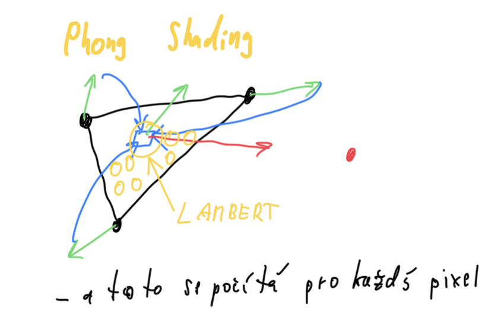
Phong shading — osvětlení se počítá pro každý pixel
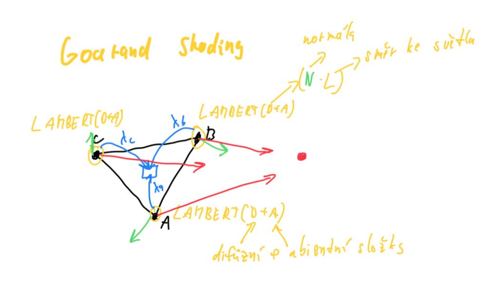
Gouraud shading — osvětlení ve vrcholech, interpolace barev po ploše
4
stínování
7×
Porovnání metod stínování polygonů:
Metoda
Princip
Kvalita / HW
Flat shading
Barva z osvětlení ve středu polygonu, celý polygon konstantní
Nezohledňuje zakřivení, lehké, OpenGL
Gouraud shading
Osvětlení ve vrcholech, interpolace barev po ploše
Zakřivení ano, průměrné normály ve vrcholech, OpenGL
Phong shading
Interpolace normál, osvětlení po pixelech
Nejkvalitnější, shadery, náročnější
5
OpenGL pipeline
7×
OpenGL pipeline — transformace vrcholu z modelového prostoru do obrazovky:
Model-space[x, y, z, 1]T × Model matrix (S, T, R — měřítko, posun, rotace) →
Textura — popis detailu povrchu nezávislý na geometrii, vzorek = texel.
Typy:
Datové — uložené v paměti, rychlé, náchylné k aliasu.
Procedurální — dynamické, parametrické, méně aliasu, pomalejší.
Informace na textuře: barva, průhlednost, optické vlastnosti, normála (bump), geometrie (displacement), zrcadlení okolí, osvětlení.
Mapování na 3D: inverzní analytické funkce (koule, válec), premietání z obalového tělesa, 3D textury (scale), UV mapování (rozvinutí „kůže“).
Mapování povrchu:
Bump mapping — optická změna normály
Displacement mapping — skutečná změna geometrie
Environment mapping — odraz okolí
Light mapping — předpočítané světlo
10
pinedův algoritmus
5×
Pinedův algoritmus — vyplňování konvexní oblasti (nejčastěji trojúhelník).
Oblast = seznam hran dělících rovinu na poloroviny.
Bod je uvnitř, leží-li na kladné straně všech polorovin (hranová funkce ≥ 0).
Hranová funkce (edge function)Ei — vektorový součin směrového vektoru hrany a vektoru z počátku hrany do bodu P.
Je-li Ei(P) ≥ 0, bod je uvnitř nebo na hranici.
Lze optimalizovat inkrementálně po řádcích/sloupcích bez přepočtu pro každý pixel.
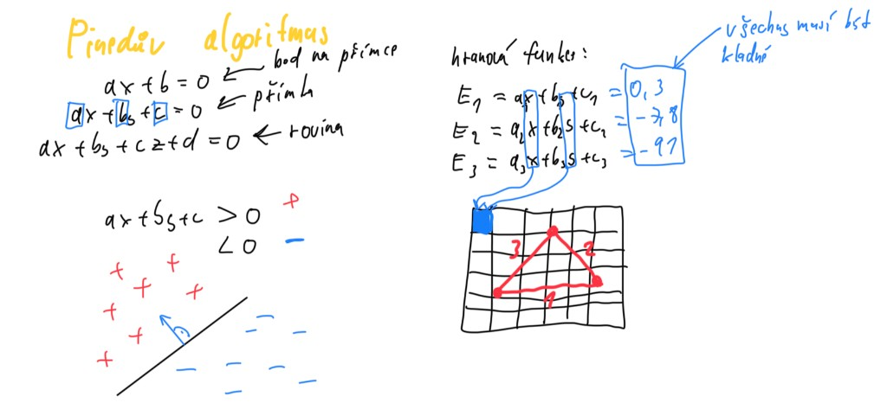
Pinedův algoritmus — hranové funkce E₁, E₂, E₃, pixel uvnitř jen když jsou všechny kladné
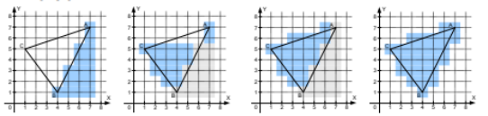
Průnik polorovin (edge funkce)
11
vertex/fragment shader
5×
Vertex shader
Běží na vertex procesoru, transformuje vrcholy primitiv (model, view, projekce).
Vstupy: built-in a user attribute/uniform proměnné.
Výstupy: varying proměnné pro rasterizátor (pozice, normály, UV, …).
Fragment shader
Operace nad fragmenty (kandidátní pixely), barva, textury, osvětlení ve výsledném renderu.
Rozdíl:
Vertex shader — geometrická transformace do pipeline
Fragment shader — finální vzhled každého pixelu
12
radiozita vs raytracing
5×
Ray-tracing
Radiozita
Stíny
ostré
měkké
Odrazy okolí na povrchu
ano
ne
Sekundární osvětlení
ne
ano
Zdroje světla
bodové
plošné
Vhodná reprezentace
CSG
polygonální
Řeší viditelnost a zobrazení
ano
ne
Ray-tracing je obrazová metoda. Radiozita je komplexní fyzikální metoda globálního osvětlení (měkké stíny, sekundární světlo) a neřeší přímo zobrazení.
13
aplikace vytvořené operace v předchozím bodě
4×
Aplikace matic z předchozího tématu na body:
Bod v homogenních souřadnicích [x, y, w] nebo [x, y, z, 1].
HSV — H odstín, S sytost, V světlost. Uživatelsky orientovaný model (barevná kolečka v editorech). Při úbytku V klesá i sytost, barva tmavne k černé.
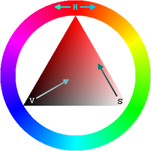
HSV: H po obvodu, S od bílé ke syté barvě, V od černé ke světlé
HSL — stejné H a S, místo světlosti L jas (lightness). CSS, návrhové nástroje. Při L 0 % nebo 100 % klesá sytost na nulu (černá / bílá).
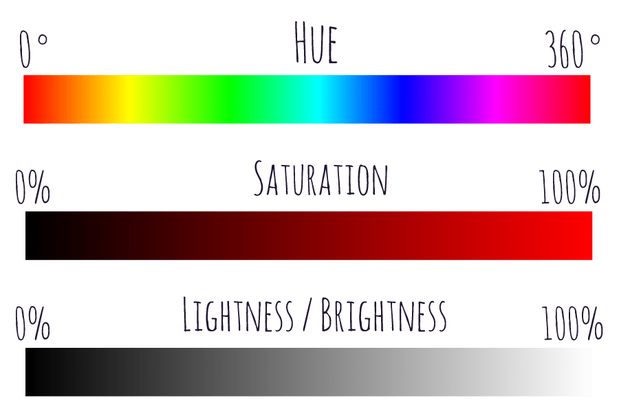
HSL: H (0°–360°), S (0–100 %), L jas / světlost (0–100 %)
Převod do šedotónu: vážený průměr kanálů, prakticky 256 úrovní.
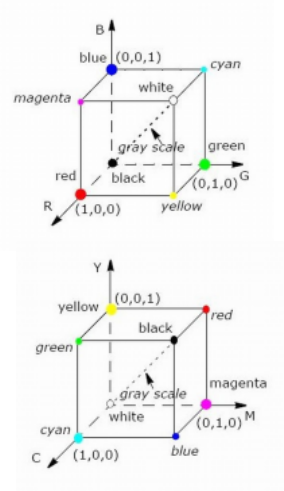
RGB a CMY — aditivní vs. subtraktivní model (krychle barev)
15
DDA s fixed point aritmetikou
3×
DDA s fixed-point aritmetikou — rasterizace úsečky bez floatů, přírůstek k ve fixed-point reprezentaci.
#define FRAC_BITS 8
LineDDAFixed(int x1, int y1, int x2, int y2) {
int k = (y2 - y1) << FRAC_BITS / (x2 - x1);
int y = y1 << FRAC_BITS;
for (int x = x1; x <= x2; x++) {
draw_pixel(x, y >> FRAC_BITS);
y += k;
}
}
Oproti float DDA: rychlejší na HW bez FPU, stejný princip — po x inkrementovat y o směrnici.
16
aditivni / substraktivni model
3×
Aditivní model (RGB) — sčítání světelných složek, více světla = světlejší, bílá = složení max. R+G+B.
Subtraktivní model (CMYK) — odčítání od bílého papíru pigmenty, více pigmentu = tmavší, černá = plné CMY + K.
RGB pro emisivní zařízení, CMYK pro tisk — fyzikálně odpovídají složení vs. filtrace světla.
17
pseudokod vykresleni krivky
3×
Pseudokód rasterizace úsečky (DDA) — první kvadrant, rostoucí úsečka:
LineDDA(int x1, int y1, int x2, int y2) {
double k = (y2 - y1) / (x2 - x1);
double y = y1;
for (int x = x1; x <= x2; x++) {
draw_pixel(x, round(y));
y += k;
}
}
Pro křivky (De Casteljau): opakovaně dělit řídicí polygon v poměru t a 1−t, spojovat body úsečkami pro různá t.
18
alias
3×
Aliasing — nežádoucí jev při nízkofrekvenčním vzorkování vysokofrekvenčního signálu (zubaté hrany, poruchy textur).
Příčiny: příliš malá vzorkovací frekvence, příliš pravidelné nebo přesné vzorkování.
Shannonův vzorkovací teorém: přesná rekonstrukce je možná, pokud je vzorkovací frekvence ≥ 2× maximální frekvence signálu.
Řešení:
Zvýšení rozlišení (náročné).
Předfiltrování vstupu / supersampling (více vzorků na pixel, konvoluce).
LineBres(int x1, int y1, int x2, int y2) {
int dx = x2 - x1, dy = y2 - y1;
int P = 2*dy - dx;
int P1 = 2*dy, P2 = P1 - 2*dx;
int y = y1;
for (int x = x1; x <= x2; x++) {
draw_pixel(x, y);
if (P >= 0) { P += P2; y++; }
else P += P1;
}
}
Rozhodování o kroku v y pomocí prediktoru P, jen sčítání a porovnání — efektivnější než DDA s float.
22
parametrický/směrnicový tvar přímky
3×
Parametrický tvar přímky (s parametrem t):
P(t) = P1 + t · (P2 − P1), t ∈ [0, 1]
Směrový vektor u = (x2−x1, y2−y1).
Směrnicový tvar (funkce y = f(x)):
y = q + k·x, kde k = dy/dx je směrnice, q offset na ose Y.
Směrnicový tvar nejde pro svislé přímky, parametrický je obecnější.
23
algoritmus De Casteljau
2×
Algoritmus de Casteljau — rekurentní vykreslení Bézierových křivek.
Řídicí body polygonu, pro dané t dělit každou úsečku v poměru t : (1−t).
Opakovat na novém polygonu, dokud nezůstane jeden bod — bod na křivce.
Pro různá t s krokem spojovat body úsečkami.
U kubik: „divide and conquer“ — rekurzivní dělení na dvě podkřivky (t = 0.5), ukončit, když je křivka dostatečně rovná (vzdálenost < úhlopříčka pixelu).
24
ořez Weiler-Artheton
2×
Weiler–Atherton — ořez polygonu oknem (obecné polygony, i s otvory).
Seznamy:
P — vrcholy a průsečíky na polygonu
W — na okně
I — vstupní průsečíky
O — výstupní průsečíky
C — ořez uvnitř okna
R — odřezky venku
Průsečíky (např. Liang–Barsky).
Polygon celý uvnitř → do C.
Start v P na prvním vrcholu z I, střídat pohyb po P / W podle typu průsečíku.
Odřezky mimo okno → R, analogicky od prvního O.
25
textury u trojuhelniku
2×
Texturování trojúhelníku — souřadnice textury v jednotlivých vrcholech, interpolace po ploše.
Příklad z guide (barva / textura v těžišti a na hranách):
T(r,g,b) = ⅓(P1+P2+P3) v těžišti.
C13(r,g,b) = ½(P1+P3) na hraně.
Obecně: (u,v) ve vrcholech → lineární interpolace u,v (a případně hloubka z) uvnitř polygonu, vzorkování texelu. U perspektivy je vhodné korektní perspektivní interpolace nebo dělení na menší trojúhelníky.
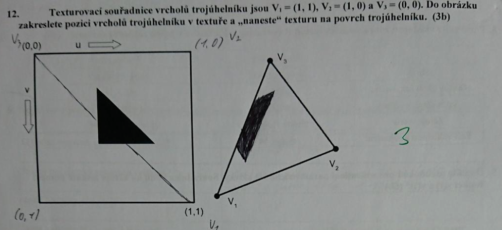
Mapování textury na trojúhelník (UV souřadnice)
26
texturovací souřadnice
2×
Texturovací souřadnice (u, v)
Zadávají se ručně nebo automaticky u vrcholů sítě — dva floaty u, v.
Typicky 0–1 (normalizované) — pozice na 2D textuře.
Mezi vrcholy se lineárně interpolují po polygonech.
Definiční obor textury může být i 3D prostorová textura[x,y,z], normála, vektor odrazu (environment mapping), předpočítaná light mapa.
27
Shannonův vzorkovací teorém
2×
Shannonův vzorkovací teorém: přesná rekonstrukce spojitého, frekvenčně omezeného signálu z diskrétního vzorku je možná tehdy, pokud byla vzorkovací frekvence alespoň dvojnásobkem maximální frekvence signálu (Nyquist: fs ≥ 2·fmax).
Porušení → aliasing. Řešení: vyšší vzorkování, předfiltrování (supersampling), vyhlazení výstupu.
28
multisampling/supersapling
2×
Supersampling — předfiltrování, pixel rozdělen na více vzorků, výsledná barva = složení (konvoluční filtr), vyhlazí hrany i textury, vysoká cena.
Multisampling — adaptivní supersampling, hustší vzorkování u hran a gradientů, méně u ploch, výrazné vyhlazení hran, menší pokles výkonu než plný supersampling.
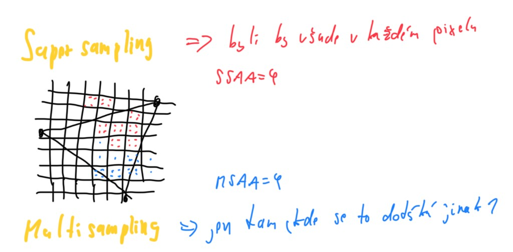
SSAA — vzorky ve všech pixelech, MSAA — více vzorků hlavně u hran trojúhelníku
29
grafický kontext
2×
Grafický kontext — datová struktura pro kreslení na různá výstupní zařízení (display, bitmapa, PDF, soubor).
Distribuce chyby (Floyd–Steinberg, Bayer, …) — chyba k sousedům.
Maticové rozptýlení — porovnání s rozptylovací maticí.
Halftoning — každý pixel nahrazen vzorem černobílých bodů dané hodnoty, zvětšuje rozměr obrazu, výstup do tiskárny.
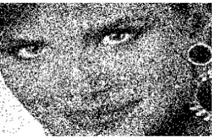
Dithering — rozptyl chyby
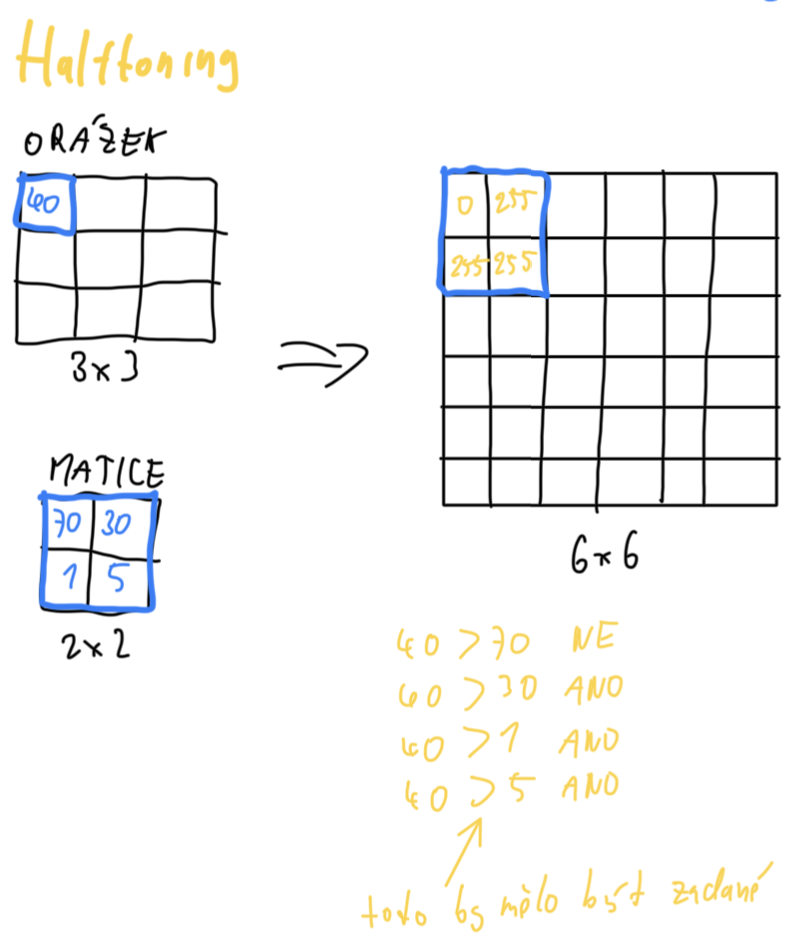
Halftoning — pixel obrázku porovnaný s maticí prahů, výstup 0 nebo 255, rozměr se zvětší
31
perspektivni vs paralelni projekce
2×
Perspektivní projekce
Středová — paprsky se sbíhají v jednom bodě (kamera).
Nezachovává rovnoběžnost hran.
Vzdálenost od středu ovlivňuje velikost průmětu.
Paralelní (ortogonální) projekce
Rovnoběžné paprsky (často kolmé).
Zachovává rovnoběžnost.
Vzdálenost obvykle neovlivňuje velikost průmětu.
Ortogonální: kvádr, perspektivní: jehlan.
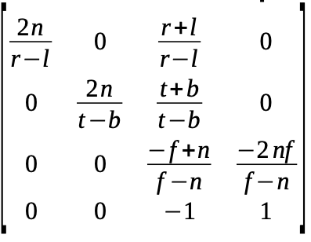
Perspektivní projekční matice
32
barycentricke souradnice
2×
Barycentrické souřadnice — váhy λ1, λ2, λ3 vůči vrcholům trojúhelníku:
P = λ1P1 + λ2P2 + λ3P3, kde λ1+λ2+λ3 = 1.
Bod je uvnitř, jsou-li všechny λi ≥ 0. Výpočet z plošných nebo vektorových veličin (např. plochy dílčích trojúhelníků). Použití: interpolace barev, textur, normál uvnitř trojúhelníku.
33
lambertuv osvetlovaci model
1×
Lambertův (difúzní) osvětlovací model — intenzita odraženého světla úměrná cos θ, kde θ je úhel mezi směrem světla L a normálou n (často I ∝ max(0, L·n)).
Na diagramu označte: zdroj světla, bod na povrchu, normálu n, směr k pozorovateli V, úhel θ. Difúzní odraz jde do všech směrů — pozorovatel vidí stejně (matný povrch).
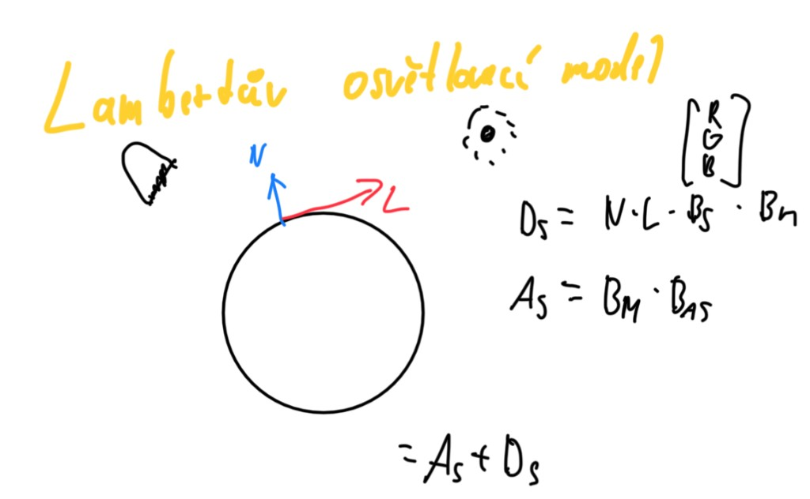
Lambertův model — N, L, Dₛ = N·L·Bₛ·Bₘ, Aₛ = Bₘ·Bₐₛ
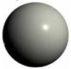
Difúzní odraz na kouli
34
rovnice křivky
1×
Rovnice křivky — polynomiální tvar, např. spline segmenty:
Q(t) = a t³ + b t² + c t + d (kubika), koeficienty z okrajových podmínek (body, tečny).